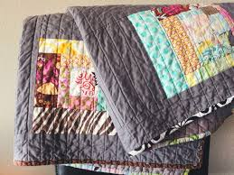
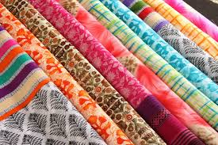

Rajasthan is very well known for their wonderful textile crafts. These products may be quilts or blankets or patterns themselves. Here are some of the most important Textile crafts in Rajasthan:
Jaipur quilts are renowned for their incredible lightness and warmth. Typically they're made from high-quality cotton or silk fabrics, filled with finely carded cotton that is locally sourced. The outer layers often feature vibrant, traditional Rajasthani prints or delicate block patterns. The process of making a Jaipuri quilt begins with the preparation of the filling, which involves thoroughly cleaning the cotton to ensure it is fluffy and free of impurities. Artisans then skillfully layer the cotton between two pieces of fabric, often silk or cotton, chosen for their softness and durability. The quilt is stitched together using a traditional technique called "tagai". This stitching is not just functional but also artistic and patterns that are specific to the artisan's community. The entire process is labor-intensive and requires a high level of skill.
Kota Doria is a type of Indian fabric known for its unique open weave structure and lightweight texture. Typically used in sarees, dupattas, and scarves, it is admired for its softness and elegance.Kota Doria is crafted from fine threads of cotton and silk. The unique blend of these materials results in a fabric that combines the lightness and comfort of cotton with the subtle sheen and strength of silk, making it ideal for warm climates. The making of Kota Doria involves a meticulous process of spinning cotton and silk threads, which are then woven on traditional pit looms. The distinctive square check pattern, known as 'khat,' is achieved through a technique called resist-dyeing, ensuring precision and uniformity.
